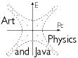

|
|
|
|
|
|
| Douglas Sweetser 39 Drummer Rd Acton, MA 01720 (978) 274-2191 sweetser@alum.mit.edu |
 |
Summary Statement
Doug is a renaissance nerd, using knowledge from science and mathematics to
direct new projects in the arts and vice-versa. He received two S.B. degrees
from MIT, in biology and chemical engineering, and has a Masters in Software
Engineering at Brandeis. He has extensively exploited art and science educational
opportunities available in Boston to pursue his visions. As a result, Doug
is developing mathematics powerful enough to go head-to-head with Einstein,
backed up by software that can be seen on the web, has a first-rate art collection,
and he cruises through Boston in a bicycle of his own design.
Education
Masters Degree in Software Engineering, Brandeis University
Spring 2001
2 S.B. degrees in Biology and Chemical Engineering, MIT
June 1984
Computer Skills
Computer languages: C, Perl, Python, Java, Javascript, and HTML
Operating systems: Macintosh, Windows 95, Linux
Graphic design: Final Cut Pro, Photoshop, Gimp, Inkscape, Quark Express
Lead Spider, Black Duck Software, Waltham, MA 2004-present
Assistant Manager, Customer Accounts, Software Tool & Die, 1998-2002
Doing Physics with Quaternions
Constructed all aspects of web site devoted to a new approach to physics.
Developed mathematics to manipulate 3D space and time consistent with known
laws of physics. Programmed a Java scientific
calculator that operates on quaternions, real and complex numbers.
Designed an animated 2D world
as a prototype of a graphic environment that is based on quaternion mathematics.
Promoted interest in site, with over 3000 visits in a year from every continent.
Monitored traffic and updated site as new
math was created.
YouTube Videos
Have produced more than 50 videos with over 50,000 views. Provides the main
channel for the "Stand-Up Physicist" educational project. These 20+ minute
shows have aired on two local Massachusetts cable channels (Acton and Auburn),
but have reach far more people than the page
devoted to the shows.
Command Line Quaternions
An open source project to that makes animation out of quaternion expressions.
Remember analytic geometry, where writing y = x[sup]2[/sup] generated
a picture? The same expression can now generate a short film.
Drummer Farms Condominiums
Designed web site for condominium association using an open source
Content Management System (CMS) called Drupal. Has slide shows and
video walk throughs of units. All condominium documents and newsletters
are online. Owners can see password protected minutes.
Do While Virtual
The Virtual On-Line site of Do While Studio orchestrates events that are
international in scope. This created a problem in coordinating the times
for events. Designed digital and analog clocks that give local and Greenwich
Mean Time which appear at the bottom of each page.
Doing physics with quaternions
This research project entails trying to reformulate all the fundamental equations
of physics. The reason for such a large task is to start from one core
hypothesis: events from any object in spacetime are described by the mathematics
of a topological algebraic field, known as the quaternions. This is
an old goal, but Doug has made a number of new insights, including a new
way of expressing the Maxwell equations.
Publication record
More than 50 videos on YouTube with over 50,000 views.
Attended the Second Meeting on Quaternionic Structures in Mathematics and Physics in Roma, Italy, September 1999. Presented a paper entitled "Maxwell's vision: electromagnetism with Hamilton's quaternions", available at http://www.univie.ac.at/EMIS/proceedings/QSMP99/index.html.
Physics Education
Working to develop a broad understanding of physics from a broad range of
learning institutions in Boston, including Harvard Extension School, Harvard
University, MIT, and BU. Courses included the Foundations of Physics,
Waves, Particles and the Structure of Matter, An Introduction to Modern Astrophysics,
Special Relativity, General Relativity, Electrodynamics, Introduction to
Quantum Mechanics, High Energy Physics and Group Theory and Its Applications
to Particle Physics.
Professional Experience
Harvard School of Public Health, 1990-1996
Conducted independent research on DNA recombination in yeast under the guidance
of Prof. Jac Nickoloff. Helped formulate goals and new methods needed for
the project. Techniques required included: plasmid constructions (over 200!),
yeast strain constructions, DNA sequencing, PCR, and Southern blots. Maintained
efficient lab by designing databases for plasmids and chemical inventory.
Ordered supplies and used Quicken to produce monthly financial statement.
Whitehead Institute for Biomedical Research, 1984-1987
Laboratory technician for Prof.. Richard A. Young. Work featured in NOVA
documentary on leprosy, the New York Times, and in ten technical publications.
US patent granted for 5 genes cloned and for epitope mapping technology first
used in the project. Sequenced second largest subunit of yeast RNA polymerase
II.
Managed Macintosh personal computers and Mac/mainframe interface for three
laboratories.
Biology Education
University of Colorado, Boulder, 1987-1989
Awarded Fellowship by the Office of Naval Research to pursue a Ph. D. in
Molecular, Cellular and Developmental Biology. Independently drew up thesis
topic on the role of RNA recombination in evolution. Designed and built automated
thermal cycler for PCR. Organized Graduate Student Symposium on "Pathogen
Strategies."
Massachusetts Institute of Technology, 1980-1984
Two S. B. degrees, in Biology and Chemical Engineering. Concentrated in Creative
Writing. Gained working experience in FORTRAN programming, VMS and UNIX operating
systems.
Exhibitions
The First National Juried Exhibition, Lancaster Museum of Art, Lancaster,
PA, July 1997
The painting "Turquoise Einstein" was one of 60 works chosen from over 300
submissions.
When Art and Science Collide, Newton, MA, Feb. 5, 1997
Gave a guest lecture at Lasell College on "Pop Science."
ArtWorks, First Impressions Gallery, Boston, MA, Jan. 1, 1997
The multimedia work, "A Brief Definition of Time", was part of a First Night
event sponsored by the Massachusetts Interactive Media Council (MIMC).
An open studio at 50 Ackers Ave., Brookline, MA., Sept. 21, 1995
Forty guests were treated to food, wine, and Grand Marnier chocolate truffles.
Performed Waltz No. 1, written and choreographed by the artist.
Duramount and Other Adhesives, Mass. Art, May 15, 1995
Student group show at Mass. Art. Displayed six works, including two performance
pieces using original music.
Two liter daffodils, Whitehead Institute, 1987-1992
An uncommissioned sculpture for the front courtyard used flasks normally used
for bacteria.
Art Education
Courses taken at the School of the Museum of Fine Arts and Mass. Art in computer
and electronic art, collage, cold glass work, welding, clay sculpture and
business skills. Has taken private lessons in singing and piano while learning
how to Lindy Hop.
Museum of Science
Participate in the Eye Opener program which involves giving a tour of the
museum for a small group of Boston second graders every Tuesday. Worked as
an interpreter for the Leonardo da Vinci: Scientist, Inventor, and Artist
exhibit, which entailed explaining Leonardo's ideas and methods to a general
audience.
Charities
Five per cent of all take-home pay goes to charities, including Planned Parenthood,
the Nature Conservancy, the Union of Concerned Scientists, Amnesty International,
the ACLU, the American Diabetes Association, the AIDS action committee, Mass
Bike, Bikes Not Bombs, the Museum of Fine Arts, and the Museum of Science.